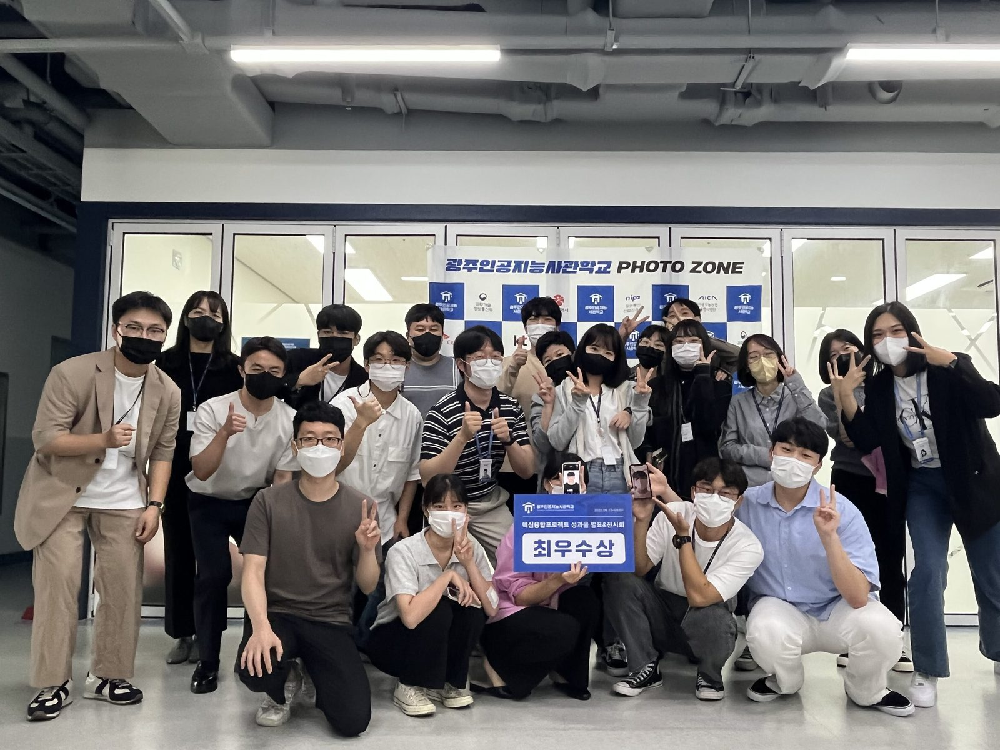
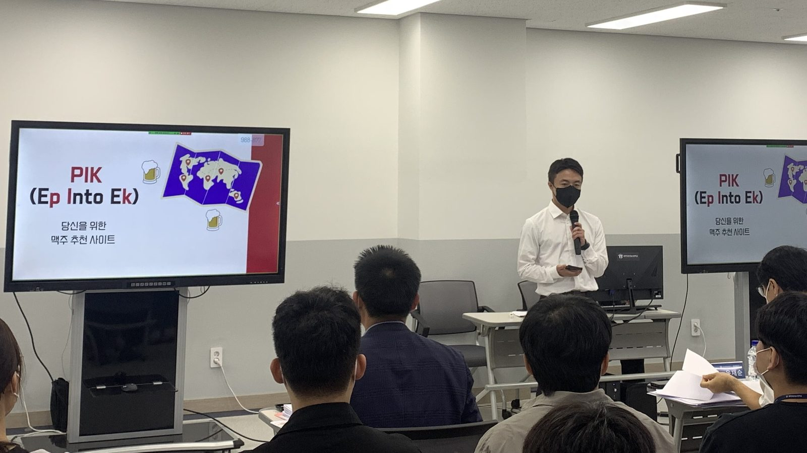
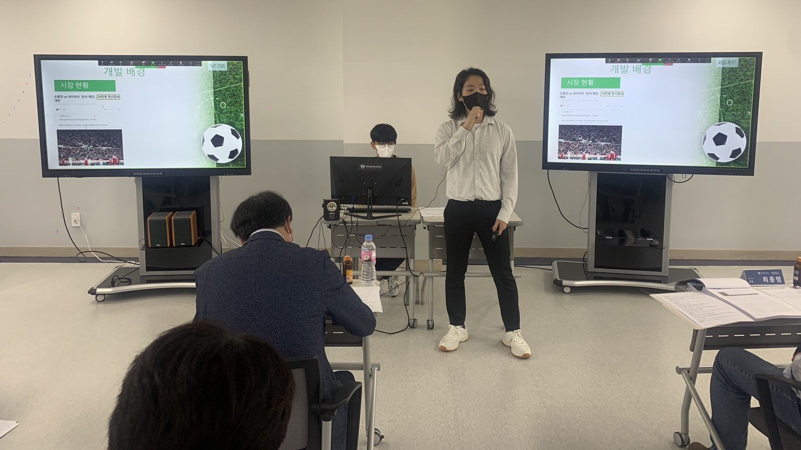
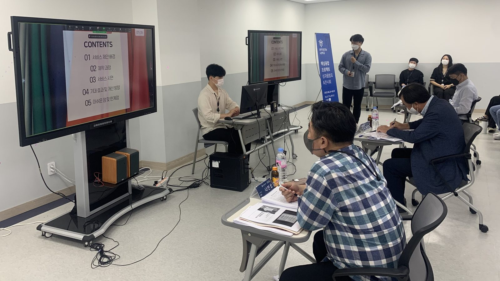
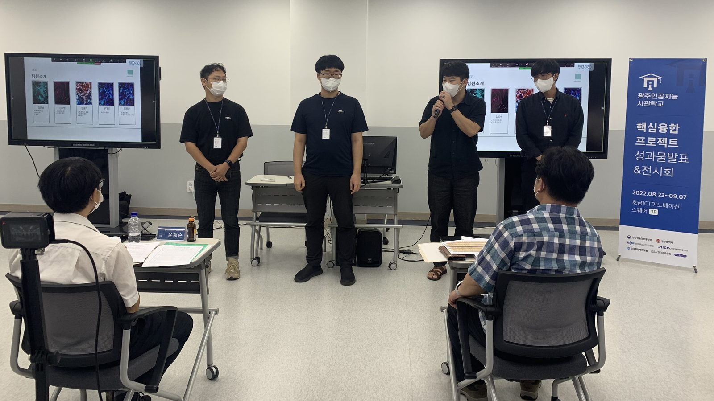
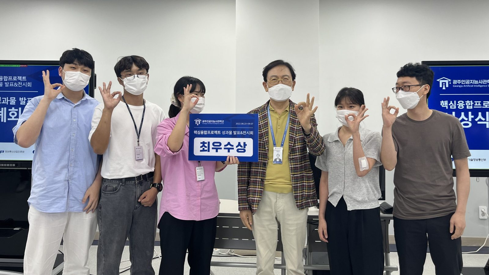
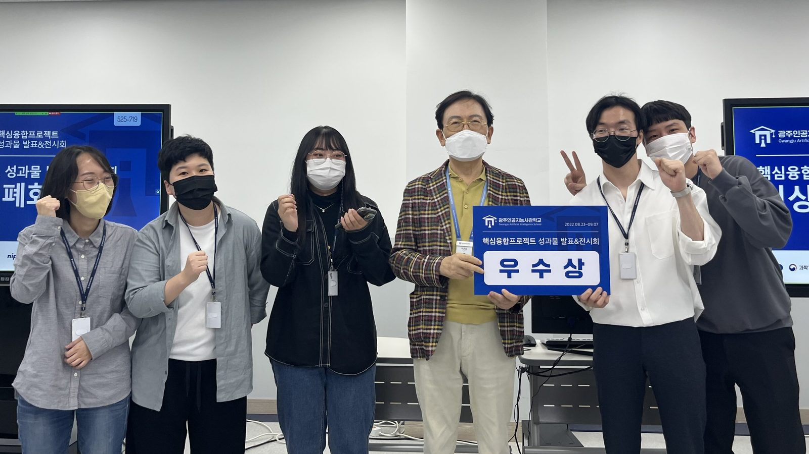
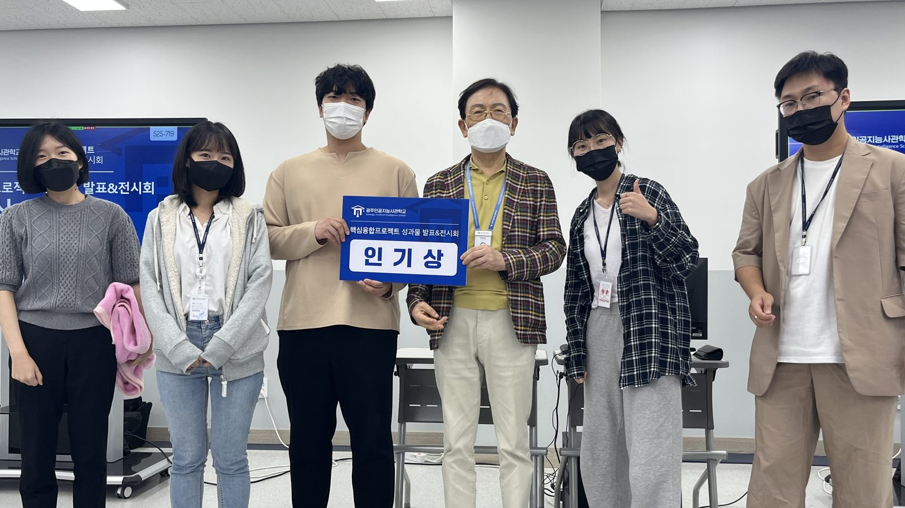

핵심역량프로젝트 성과물 발표 👏👏👏
안녕하세요 여러분~ 오늘은 광주인공지능사관학교의 첫 프로젝트 이야기를 해보려고 해요!
이번 프로젝트는 8월 23일부터 9월 7일까지 10개 반의 59개 팀이 참가했습니다. 그럼 먼저 이번에 진행한 프로젝트가 무엇인지부터 알아볼까요?[ 핵심역량프로젝트란 🧐 ]
협업능력과 아이디어 선정기법 능력향상을 중점으로 웹이나 앱 형태로 서비스를 구현하는 것입니다! 성과물 발표는 발표로 시작하여 심사를 거쳐 시상까지 진행하였는데요. 그 과정을 한번 자세히 들여다 볼게요. 🔍🎤 01 발표

개발 배경부터 기대 효과까지 😎 준비한 프로젝트에 대해 소개하는 시간이에요!
팀을 대표하여 발표하는 발표자의 모습.. 두근두근..💗 얼마나 떨릴까요?✏️ 02 심사

발표 뒤에는 기업 대표를 비롯한 전문 심사위원으로부터 평가를 받는 시간이 이어지는데요.
팀원 모두가 나와 맡은 역할을 소개하고 질의에 응답하기도 합니다!🏆 03 시상



심사 결과에 따라 최우수상, 우수상 그리고 교육생 투표로 선정된 인기상까지 시상하는 시간도 가졌답니다! 함께 고생한 팀원들과 나누는 수상의 기쁨이란~ 이루 말할 수 없겠죠? 🥺 하지만 이번 프로젝트를 위해 열심히 준비한 교육생 모두 고생 많으셨다는 인사를 끝으로 이번 포스팅을 마치도록 하겠습니다. ☺️